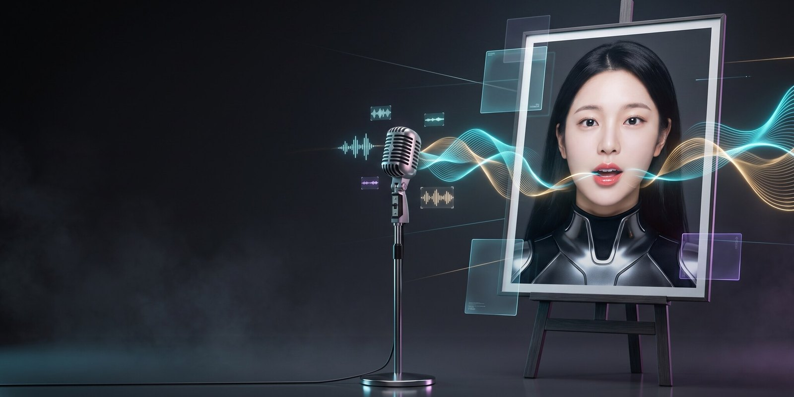

Student Web App
201One-Tap Workflows
1850Visual Library
194Smart Workflow
Retouch A Controls
Retouch B Pro
HNK STUDENT ACCOUNT
Account, license & devices
Your live access state comes from the shared HNK server. One Phone and one shared Computer slot cover the Web App and Photoshop Panel.
Registered devices
You can release your own Computer slot and your own Phone slot once every 7 days each, and every release is recorded. Ask an HNK administrator when you need more devices than your plan allows.
Phone · Web App
Checking this Phone slot…
ဖုန်းအသစ် ပြောင်းလိုက်ရင် အပေါ်က “Phone နေရာ ပြန်လွှတ်မယ်” ကို နှိပ်လိုက်ပါ — ၇ ရက်ကို တစ်ကြိမ် ကိုယ်တိုင် လုပ်လို့ရပါတယ်။
Computer · Web App + Panel
Checking this Computer slot…
ဒီ computer က တစ်ခါ register ဖြစ်ပြီးရင် အလိုအလျောက် မှတ်ထားပါတယ် — Photoshop panel လည်း sign-in တစ်ခါတည်းနဲ့ ဝင်လို့ရပါပြီ။ စက်အသစ် ပြောင်းလိုက်ရင် အပေါ်က “Computer နေရာ ပြန်လွှတ်မယ်” ကို နှိပ်လိုက်ပါ — ၇ ရက်ကို တစ်ကြိမ် ကိုယ်တိုင် လုပ်လို့ရပါတယ်။ စက် အရေအတွက် ထပ်တိုးချင်တာကတော့ ဆရာ့ကို ပြောပါ။
Secure Photoshop Panel
Approved account, active license, download permission and the registered Computer are required.
HNK LEARNING
Tutorials
Start with device registration, then learn the AI Tools and pair the Photoshop Panel on the same Computer.

No Install · Panel Data · RunningHub AI
Photoshop panel ထဲက One-Tap တွေ browser ရောက်လာပြီ
SMART WORKFLOW

Setup
တစ်ခါချိန်ညှိရုံနဲ့ အမြဲအဆင်သင့် ဖြစ်နေမယ်
Welcome to HNK AI Studio
RUNNINGHUB ENTERPRISE
—
—
—
Version

Reference Library
Look ၁၈၅၀ မျိုးထဲက ကြိုက်တာ ရွေးလိုက်ရုံ — ချက်ချင်းစနိုင်
VISUAL LIBRARY

Retouch A Studio

Retouch B Pro
PHOTO
MY RECIPES

Freeform Create
စိတ်ကူးထဲက မြင်ကွင်းတိုင်းကို လွတ်လပ်စွာ ဖန်တီးပါ
PROMPT
GENERATE
တိုက်ရိုက် ထုတ်နေပါတယ် — စက္ကန့် ၂၀-၆၀ လောက် စောင့်ပါ…

Imagine
ပုံထည့် · template ရွေး · တစ်ချက်နှိပ် — prompt မလို

Image to Video
ဓာတ်ပုံတွေကို အသက်ဝင် လှုပ်ရှားစေမယ်
VIDEO — IMAGE TO VIDEO
VIDEO WORKFLOW
PROMPT
GENERATE

Video to Video
ဗီဒီယိုထဲ ကိုယ့်ဇာတ်ကောင် — ကင်မရာနဲ့ နောက်ခံ အတိုင်း
VIDEO SMART WORKFLOW
VIDEO TOOLS

Talking Photo
ပုံတစ်ပုံ + အသံတစ်ခု — စကားပြောနေတဲ့ ဗီဒီယို
TALKING PHOTO

BATCH LOOKS
ဓာတ်ပုံအားလုံးကို Look တစ်ခုတည်းနဲ့ တစ်ပြိုင်နက် ပြင်မယ်
PATH RETOUCH
LOOK
SAVE

Text to Image
စာသားတစ်ကြောင်းကနေ ပရော်ဖက်ရှင်နယ်ပုံ ဖြစ်လာမယ်
TEXT TO IMAGE
PROMPT
GENERATE

My Gallery
ဖန်တီးခဲ့သမျှ အမှတ်တရတွေ ဒီမှာအမြဲ စုစည်းထား
MY GALLERY
ထုတ်ပြီးသမျှ ရလဒ်တွေ ဒီမှာ အလိုအလျောက် စုသိမ်းထားတယ် (ဖုန်းထဲမှာပဲ) — reload လုပ်လည်း မပျောက်ဘူး။
ရလဒ် မရှိသေးပါ — Generate လုပ်ပြီးရင် ဒီမှာ ရောက်လာမယ်။
Album Pages
ပုံ ၁–၆ ပုံ ထည့် · အရွယ်ရွေး · စာမျက်နှာ ထွက်